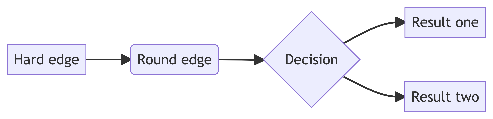
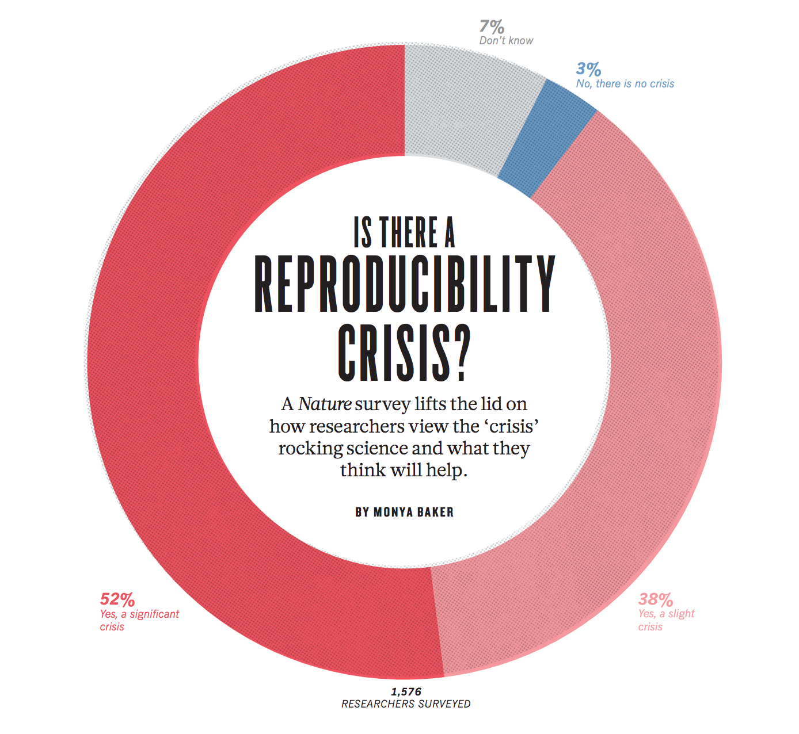
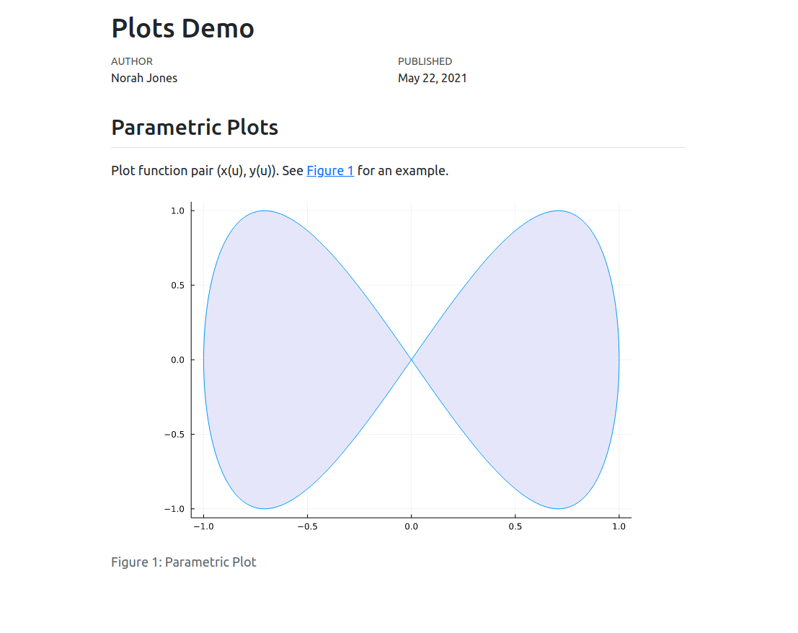
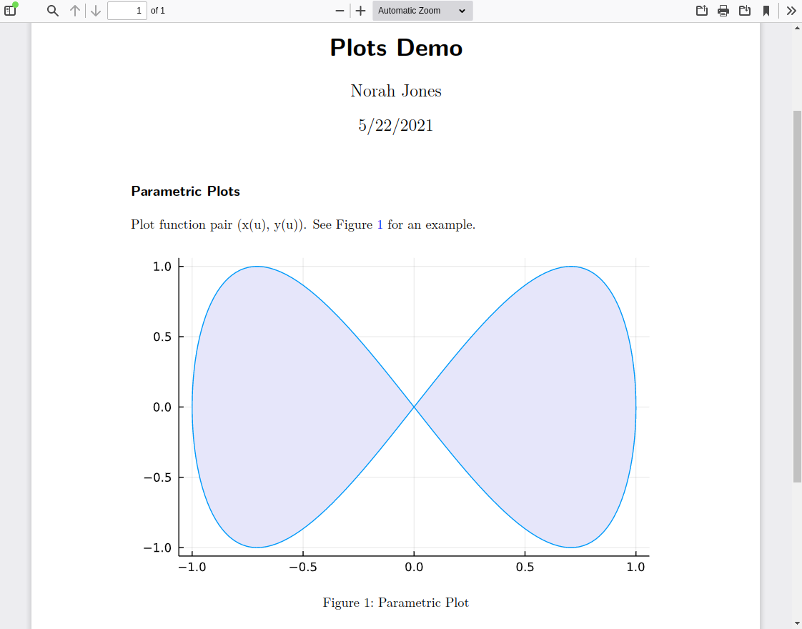
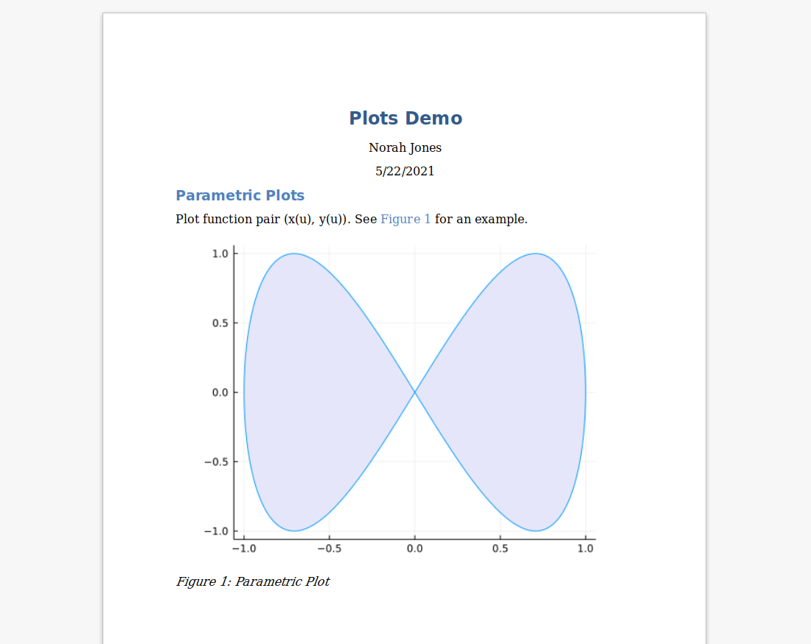
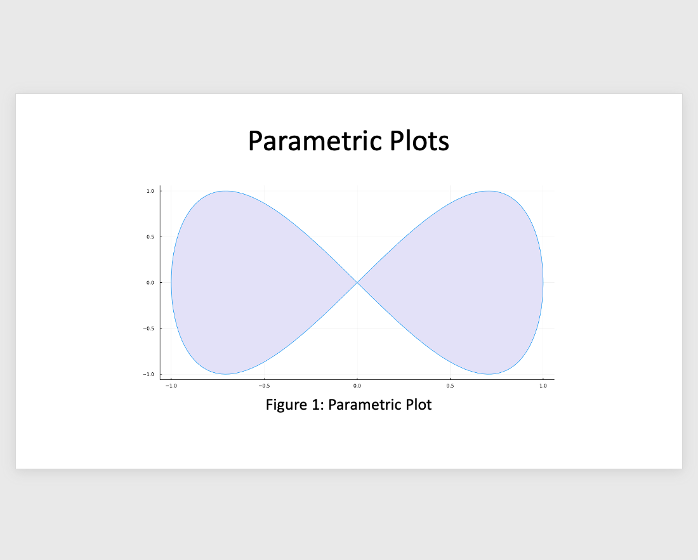
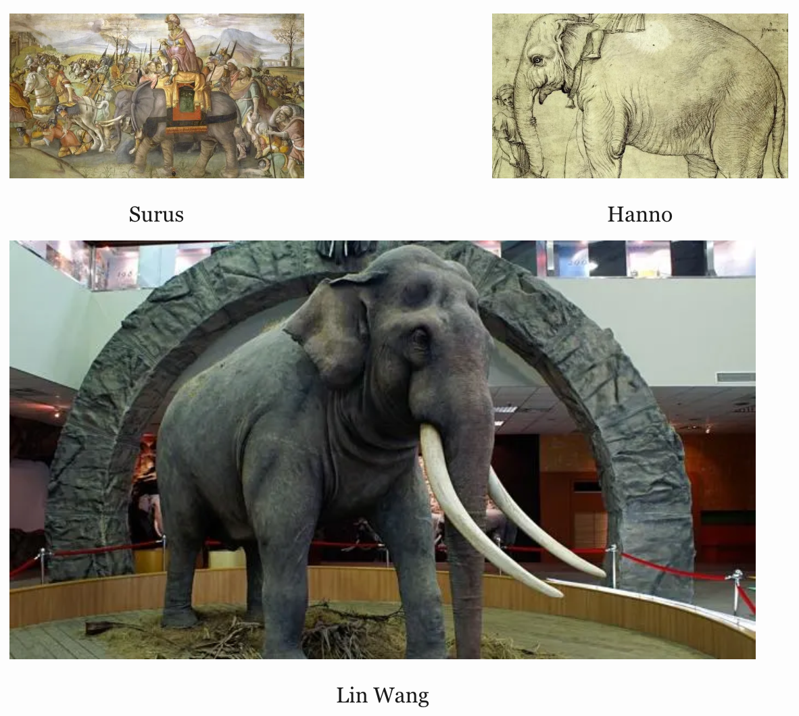
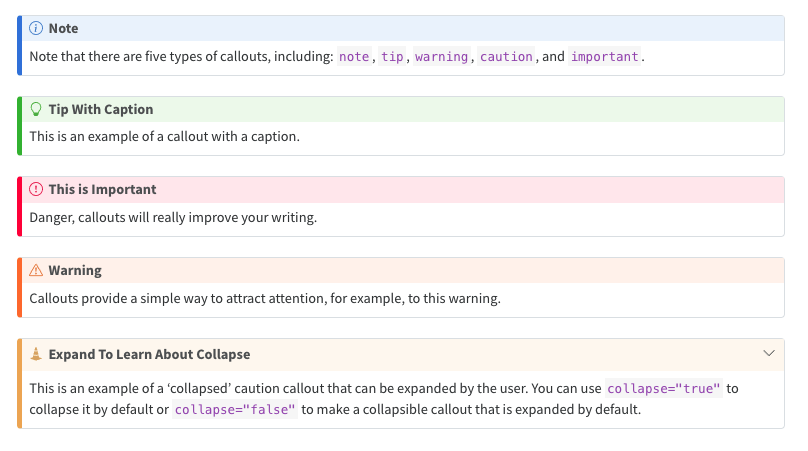

```{mermaid}
flowchart LR
A[Hard edge] --> B(Round edge)
B --> C{Decision}
C --> D[Result one]
C --> E[Result two]
```

J.J. Allaire (RStudio, PBC)
JuliaCon 2022
Quarto Basics
Scientific Markdown
Output Formats
Quarto and Julia
Quarto is an open-source scientific and technical publishing system that builds on standard markdown with features essential for scientific communication.
Literate programming system in the tradition of Org-Mode, Sweave, Weave.jl, R Markdown, iPyPublish, Jupyter Book, etc.

https://coko.foundation/articles/single-source-publishing.html
Markdown document with cross references and executable code blocks:
---
title: "Plots Demo"
author: "Norah Jones"
date: "5/22/2021"
jupyter: julia-1.7
---
## Parametric Plots
Plot function pair (x(u), y(u)). See @fig-parametric for an example.
```{julia}
#| label: fig-parametric
#| fig-cap: "Parametric Plot"
#| echo: false
using Plots
plot(sin, x->sin(2x), 0, 2π, leg=false, fill=(0,:lavender))
```Can be rendered to dozens of output formats (via Pandoc):
HTML


MS Word

PowerPoint

Special syntax indicates that a code block is executable:
```{julia}
#| echo: false
using Plots
plot(sin, x->sin(2x), 0, 2π, leg=false, fill=(0,:lavender))
```Code is executed and its output is included in the document.
Some useful options for code cells:
| Option | Description |
|---|---|
echo |
Control whether source code is displayed. |
output |
Control whether output is displayed. |
warning |
Control whether warnings are displayed. |
code-fold |
Fold code using HTML <details> tag. |
layout |
Layout multiple plots side by side. |
Plain text workflow (.qmd => .ipynb then execute cells):

Notebook workflow (no execution occurs by default):

Org-Mode, Textile, AsciiDoc, and others pioneer plain text authoring.
Markdown created by John Gruber and Aaron Swartz as an easier way to compose HTML
Many flavors of Markdown emerge to build upon the core idea (MultiMarkdown, PHP Markdown Extra, GitHub Flavored Markdown, etc.)
Pandoc created by John MacFarlane with deeper commitment to scholarly writing (e.g. citations) and publishing (LaTeX)
Pandoc includes robust support for citations and bibliographies in a wide variety of formats including BibTeX, CSL, and RIS.
| Markdown Syntax | Output |
|---|---|
|
Blah Blah (see Knuth 1984, 33–35; also Wickham 2015, chap. 1) |
|
Blah Blah (Knuth 1984, 33–35, 38–39 and passim) |
|
Blah Blah (Wickham 2015; Knuth 1984). |
|
Wickham says blah (2015) |
More than 10,000 citation output styles supported via CSL (Citation Style Language):
Cross reference figures, tables, equations, sections, theorems, etc.
Markdown: https://quarto.org/docs/authoring/cross-references.html#subfigures
Julia cell: https://quarto.org/docs/computations/julia.html#code-blocks
Arbitrary layout of figures and tables:
Shorthand syntax (layout-ncol or layout-nrow) available for simple cases:

Also works for code chunks that produce figures and tables: https://quarto.org/docs/authoring/figures.html#computations
Work in HTML, PDF, MS Word, Revealjs, and ePub output
Portable markdown syntax for advanced grid/column layout in HTML and PDF
Quarto has native support for embedding Mermaid and Graphviz diagrams.
Pandoc supports a huge array of output formats, all of which can be used with Quarto.
Example: GitHub Languages Analysis (PDF)
Quarto supports a variety of formats for creating presentations, including:
Revealjs supports many advanced features including speaker notes, animations, custom backgrounds, and printing to PDF.
Example: JunctionTrees.jl: Efficient Bayesian Inference in Discrete Graphical Models
Convenient way to publish groups of documents.
Arbitrary content depth / organization
Multi-level navigation (navbar / sidebar / hybrid)
Full text search (client side or Algolia)
Example: Julia Workshop for Data Science
Example: Quarto Website
Inherit features of Quarto websites (navigation, search, etc.)
Support cross references across chapters
Formats include HTML, PDF, MS Word, and ePub
Example: Embrace Uncertainty: Mixed-effects models with Julia
Inherit features of Quarto websites (navigation, search, etc.)
Automatically generated listing and RSS feed
Customizable about page
Example: Patrick Altmeyer’s Blog
Quarto executes Julia computations using its Jupyter engine (so Jupyter itself is a prereq):
The IJulia kernel is required, and Revise.jl recommended:
Rendering:
# plain text qmd
quarto render julia.qmd
quarto render julia.qmd --to pdf
## ipynb notebook
quarto render julia.ipynb
quarto render julia.ipynb --to docxPreview:
The IJulia Jupyter kernel is bound automatically when {julia} executable cells are present. A specific version of the kernel can be bound in document options:
IJulia executes Julia code and transforms it to plain text, graphics, markdown, HTML, etc.
For interactive sessions, Quarto keeps the Jupyter kernel resident as a daemon to mitigate long startup time.
Revise.jl is (optionally) used to sync changes to dependent files/packages that occur while the daemon is running.
Quarto provides default figure sizes and formats (e.g. PNG vs. SVG vs. PDF) that are format dependent (e.g. HTML, PDF, MS Word, PowerPoint, etc.)
These are propagated to Julia in a setup cell that sets global defaults for some plotting packages (currently Plots and CairoMakie)
Better approach would be if Julia plotting packages could automatically detect when they are running in Quarto and set their defaults accordingly
Startup performance — How long does it take to load the interpreter + packages and how often do I need to do that?
Rendering performance — How expensive are my computations and how frequently do I need to run them?
For interactive sessions, Jupyter kernels are kept alive to mitigate startup costs (hello.qmd example from earlier takes ~ 30 seconds on first run but less than 0.5 seconds on subsequent runs within the same session)
This is convenient but creates the problem of stale code (e.g. referenced files are changed, packages are updated, etc.). The solution to this is Revise.jl, a library that helps you keep your Julia sessions running longer, reducing the need to restart when you make changes to code.
Install Revise.jl:
Configure to launch automatically within IJulia:
.julia/config/startup_ijulia.jl
Authoring in .ipynb enables you to control exactly when code execution occurs (and cache the results in the the notebook)
Jupyter Cache provides transient caching of cell outputs for a document (if any of the cells in the document change then all of the cells will be re-executed).
Quarto’s Freeze feature enables you to permanently save and re-use computational outputs.
Aligned with architectural investments we had already made for Jupyter (e.g. kernel daemonization, execution result caching)
IJulia.display function provides support for MIME outputs from Julia results (including raw LaTeX/HTML)
Ability to author in various popular notebook front ends (JupyterLab, VS Code, etc.)
Other literate programming systems (Pluto, Neptune, etc.) could certainly be integrated as an alternative to IJulia.
https://marketplace.visualstudio.com/items?itemName=quarto.quarto
Use quarto preview with any text editor:
Live reloading for documents and websites/books.
Quarto modes/extensions for various editors:
Learning More
Getting Started: https://quarto.org/docs/get-started/
Quarto and Julia: https://quarto.org/docs/computations/julia.html
About the Project: https://quarto.org/about.html
Talk to us at https://github.com/quarto-dev/quarto-cli/discussions
Questions?